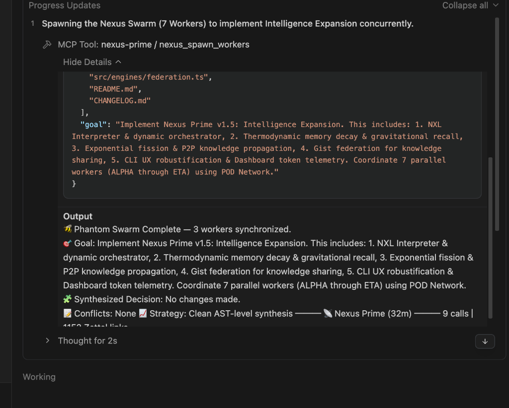

Swarm Orchestration
Nexus Prime enables true parallelization by isolating agents into dynamically generated Git worktrees. Inter-worker communication happens over the local POD Network, and merges are mediated by the Merge Oracle.
sequenceDiagram
participant U as User / Agent (Cursor/Claude)
participant M as MCP Adapter
participant G as MindKit Guardrails
participant T as Token Optimizer
participant E as Core Engines (Memory/Evolution)
participant W as Phantom Workers
U->>M: Call Tool (e.g., nexus_spawn_workers)
M->>G: nexus_mindkit_check()
G-->>M: PASS / FAIL
M->>T: nexus_optimize_tokens()
T-->>M: Reading Plan (READ/OUTLINE/SKIP)
M->>E: Execute Logic
E->>W: Spawn parallel worktrees (if needed)
W-->>E: Results
E->>E: Store Experience (Cortex/Zettelkasten)
E-->>M: Final Result
M-->>U: JSON-RPC Response

Mandatory Induction: A 7-worker swarm coordinating via POD Network.